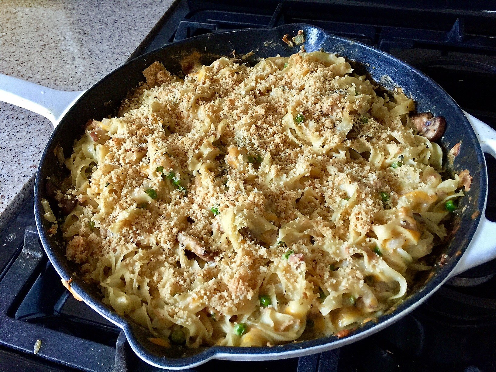

Skillet Tuna Casserole

Description
Tons of fresh herbs add flavor to this easy skillet tuna casserole made with peas, cremini mushrooms, and two types of cheese.
Ingredients
- 1/2 (16oz) package yolk-free egg noodles
- 2 tablespoons butter
- 1 (16oz) package cremini mushrooms, thinly sliced
- 1 1/2 cups peas
- 1.2 medium yellow onion, chopped
- 1/2 teaspoon kosher salt
- freshly ground black pepper to taste
- 1 pinch cayenne pepper
- 2 tablespoons all-purpose flour
- 1 cup whole milk
- 3/4 cup low-sodium chicken broth
- 2 cups grated white cheddar cheese
- 1 (8oz) can water-packed tuna, drained and flaked
- 1/2 cup parmesan cheese, divided
- 2 tablespoons chopped fresh parsley
- 2 tablespoons chopped fresh dill
- 2 tablespooons chopped fresh chives
- 1 tablespoon lemon juice
- 1/4 cup panko bread crumbs
- 1 tablespoon melted butter
Steps
- Preheat the oven to 375 degrees F (190 degrees C).
- Fill a large pot with lightly salted water and bring to a rapid boil. Cook egg noodles at a boil until tender yet firm to the bite, 10 to 12 minutes. Drain.
- While the egg noodles are cooking, melt 2 tablespoons butter in a large, oven-safe skillet over medium heat. Add mushrooms, peas, and onion and cook, stirring occasionally, until slightly softened, about 5 minutes. Season with salt, pepper, and cayenne.
- Sprinkle flour over the vegetables; cook and stir for 2 minutes. Add milk and chicken broth and bring to a simmer. Cook until thickened, 2 to 3 minutes. Remove from the heat.
- Add drained egg noodles to the vegetable mixture, along with Cheddar cheese, tuna, 1/4 cup Parmesan cheese, parsley, dill, chives, and lemon juice; stir until well combined.
- Combine remaining 1/4 cup Parmesan with panko and 1 tablespoon melted butter. Sprinkle over the casserole.
- Bake in the preheated oven until golden and bubbly, 17 to 19 minutes.
Back to home page